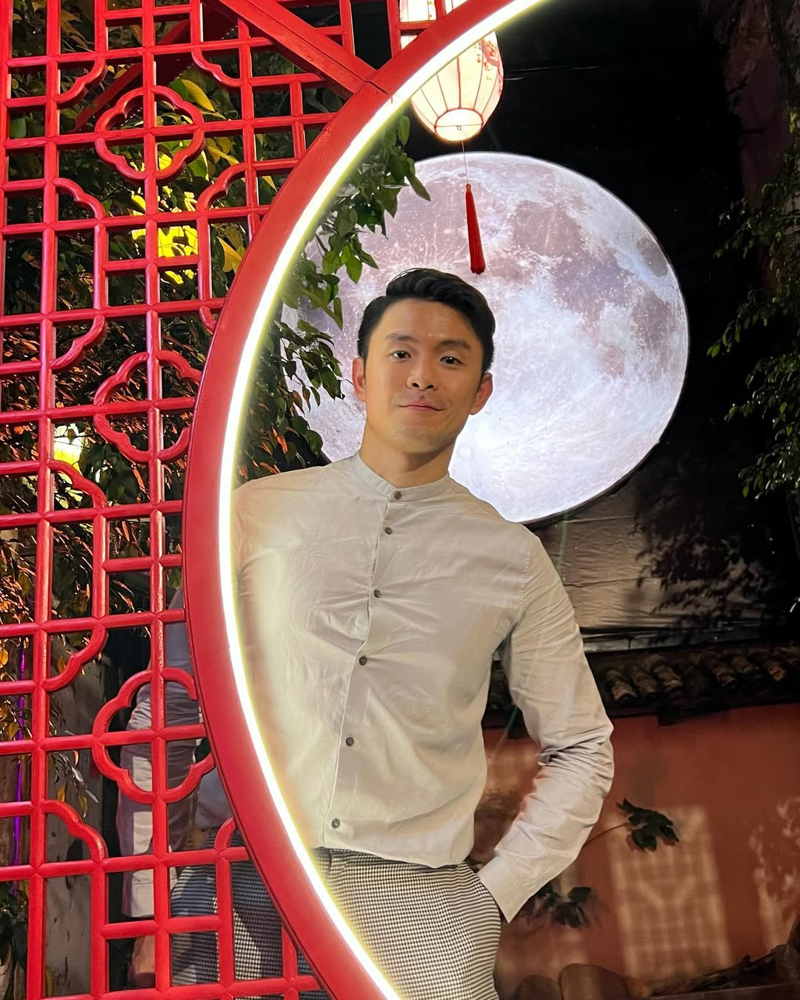
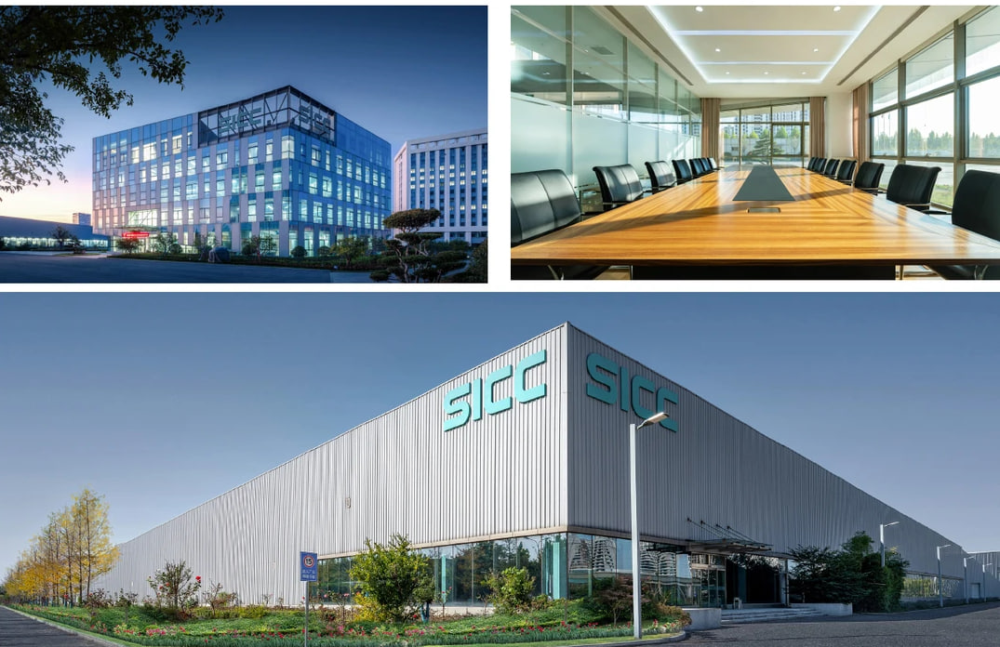
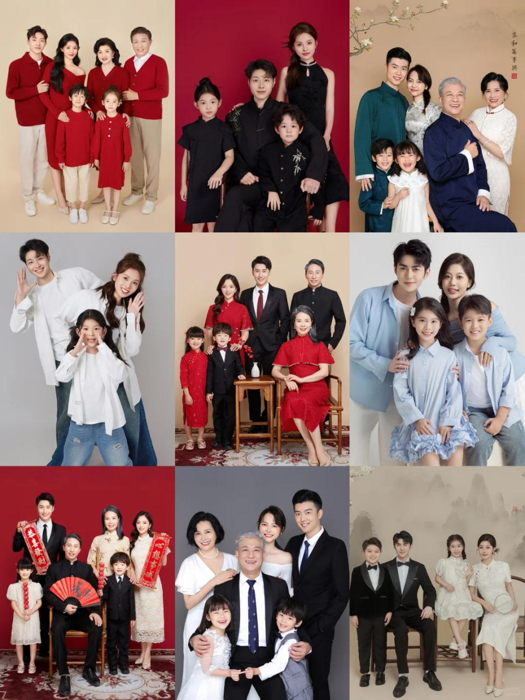
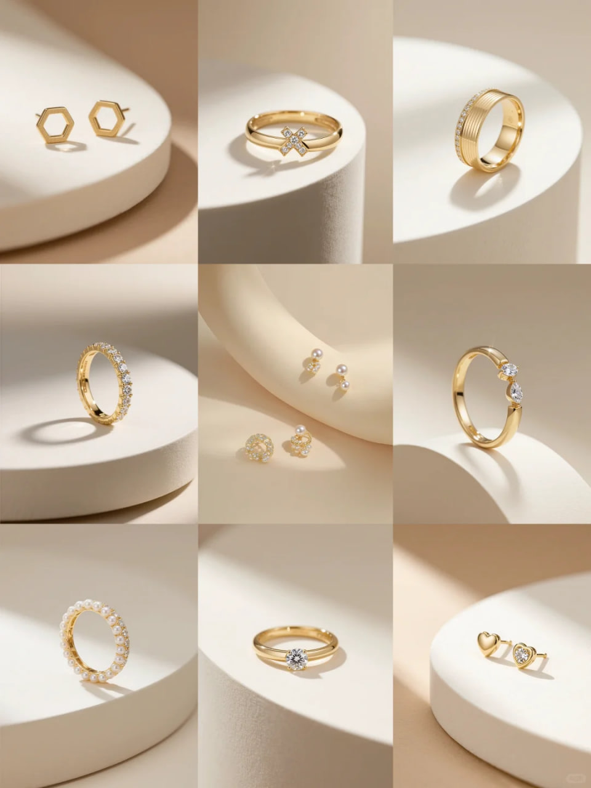
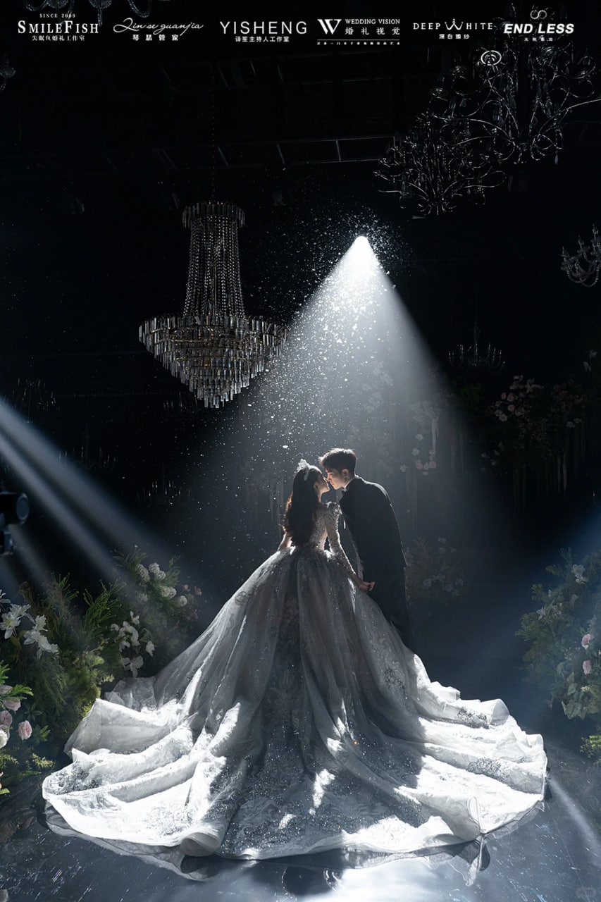
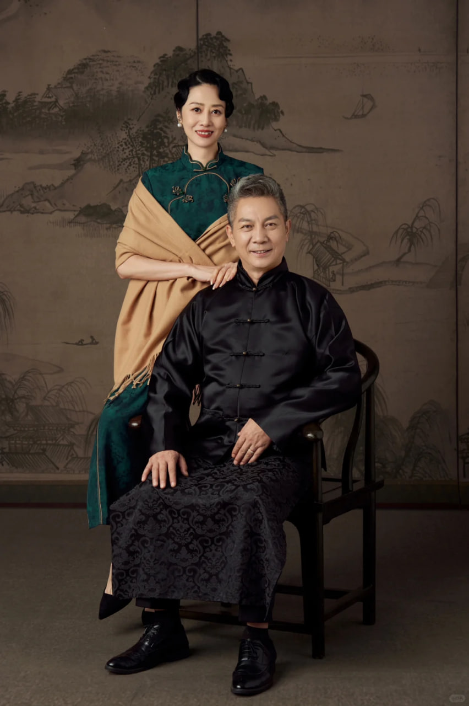

籍貫：日本（祖籍台灣桃園）
教育背景：博士 | 日本大學藝術學部 | 攝影專業
個人特質：沉穩務實、責任心強、注重細節、善於溝通，對待客戶真誠，對待作品嚴謹，始終追求極致的拍攝效果。
興趣愛好：茶道、戶外攝影、旅行、閱讀，喜歡在生活中捕捉美好瞬間，將生活感悟融入攝影創作。
個人理念：用鏡頭記錄真實，用光影傳遞溫度，每一次拍攝都是獨一無二的創作，不負每一份信任。
1. 統籌攝影工作室日常運營管理，制定年度拍攝計劃，分解工作目標並推動落地，確保工作室高效運轉。
2. 對接客戶需求，定制個人化拍攝方案，從前期溝通、場景選擇到後期精修全程跟進，保障客戶滿意度。
3. 管理攝影團隊，負責攝影師、化妝師招聘培訓，制定績效考核機制，提升團隊專業能力和服務水平。
4. 把控拍攝作品質量，優化拍攝流程和後期修圖標準，持續提升工作室的作品口碑和市場競爭力。
1. 主打個人寫真、全家福、企業宣傳照、產品拍攝，擅長根據客戶特質定制拍攝風格，突出人物/產品核心特點。
2. 負責拍攝場景佈置、燈光調試、道具搭配，指導客戶擺拍動作，捕捉自然真實的畫面效果。
3. 主導後期成片精修、調色、排版設計，根據客戶需求調整效果，製作相冊、電子檔等交付產品。
4. 跟進攝影行業趨勢，引進新型拍攝設備和技術，推出符合市場需求的拍攝套餐和風格。
1. 從業20餘年，累計服務客戶2000+，完成各類拍攝專案5000+，客戶回購率達60%以上，口碑良好。
2. 擅長人像光影把控、產品質感拍攝、紀實風格創作，尤其精通中老年寫真、全家福溫馨風格拍攝。
3. 曾為100+家中小企業拍攝宣傳照，幫助客戶提升品牌視覺效果，部分作品入選本地攝影協會優秀案例。
4. 熟悉各類攝影器材和後期軟體（PS/LR），具備快速應對各類拍攝場景的能力，能高效解決拍攝中的突發問題。
以下為本人部分攝影作品，更多作品可聯繫諮詢
拍攝風格：光影極簡 | 完成時間：2025年2月

服務客戶：上海XX科技公司 | 完成時間：2025年1月

拍攝場景：室內實景 | 完成時間：2024年12月

品類：文創產品 | 完成時間：2024年11月

拍攝場景：室內草坪 | 完成時間：2024年10月

拍攝風格：復古質感 | 完成時間：2024年9月
聯繫電話：080XXXX8888
信箱：jianfeng8882@gmail.com
工作室地址：日本105-0022 Tokyo,Minato City,Kaigan,2-chome-2，末橋
工作時間：週一至週日 9:00-18:00（需提前預約）
歡迎隨時聯繫諮詢拍攝事宜，我將根據你的需求定制專屬方案，真誠為你服務！